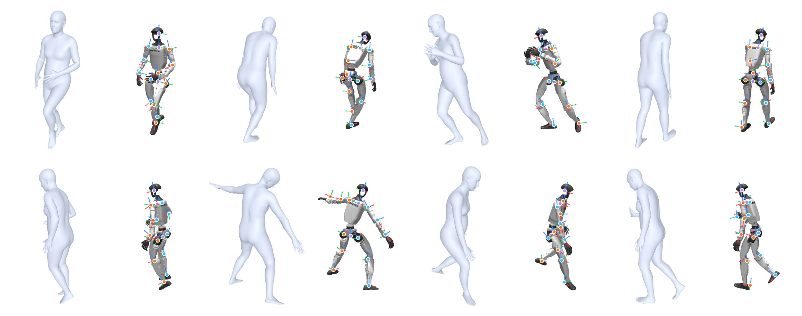
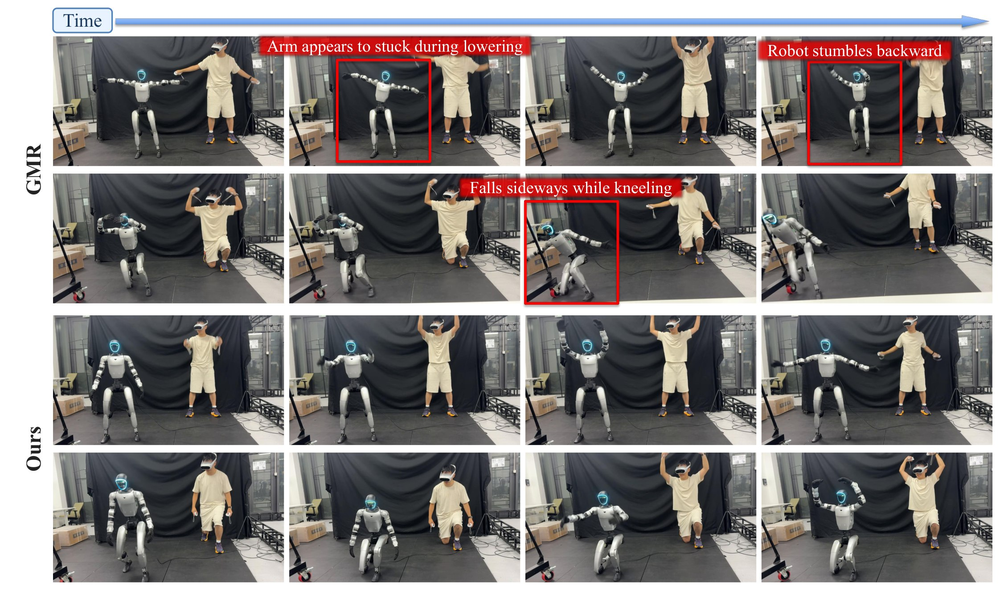

Streaming motion retargeting for humanoids
SMR: Learning Streaming Motion Retargeting for Humanoids from Human Semantic
Human motion semantics become physically grounded humanoid references, one frame at a time.
01 / Overview
Abstract
Retargeting human motion to humanoids requires preserving motion semantics while accounting for the robot's physical constraints. Kinematic pipelines prescribe a robot trajectory through geometric matching, without establishing whether it can be executed under the robot's dynamics. Prior physics-supervised neural methods train bidirectional full-sequence models on physics-refined kinematic trajectories, remaining tied to prescribed kinematic solutions and requiring noncausal context.
We propose SMR, a streaming neural motion retargeter learned from semantic-conditioned physics experts. Human motion is converted into robot-aware task-space targets for body landmark positions, orientations, and velocities. Physics experts track these targets directly in simulation under contact, dynamics, and actuator constraints. A single strictly causal Transformer learns from accepted executed state trajectories and generates a robot motion reference using only current and past human observations.
In a shared Unitree G1 evaluation with a frozen whole-body controller, SMR improves closed-loop completion and tracking errors over kinematic and physics-refined baselines. We also show qualitative streaming teleoperation on a physical G1.
02 / From semantics to references
Method

Semantic-conditioned physics experts
Let the robot realize the motion.
Expert policies track semantic task-space targets directly in simulation. Contact, balance, and actuator constraints shape the executed trajectory. Only expert rollouts that pass semantic and physical validity checks become student supervision.
- 01 Robot-aware body landmark commands express the human motion task.
- 02 Accepted simulator state rollouts provide dynamics-grounded labels.
- 03 A causal student uses current and past human observations, with no future human frames.
03 / Evaluation
Closed-loop execution on G1
All methods are compared on the same 400 motions in simulation using the same frozen MimicLite whole-body controller. Success means completing a motion without the paper's pelvis-height or projected-gravity failure conditions. Errors include all motions, including failures.
| Reference source | Success ↑ | MPJPE ↓ | E-MPJPE ↓ |
|---|---|---|---|
| GMR | 90.0% | 0.060 m | 0.115 m |
| NMR | 92.0% | 0.057 m | 0.111 m |
| SMR (ours) | 97.0% | 0.039 m | 0.080 m |
At 50 Hz, the SMR model step takes 0.37 ms per frame, compared with 4.87 ms for the warm-started GMR solve under the reported protocol.
04 / Results
Qualitative comparisons


05 / Physical deployment
Streaming real-robot captures
Selected frames from independent G1 teleoperation recordings compare GMR-driven and SMR-driven execution through MimicLite. They show arm motion and kneeling; the paper reports these as qualitative demonstrations.

06 / Citation
BibTeX
@article{gu2026smr,
title = {SMR: Learning Streaming Motion Retargeting for Humanoids from Human Semantic},
author = {Gu, Chun and Zhang, Juntong and Li, Jingyu and Zhang, Li},
year = {2026},
journal = {arXiv preprint}
}